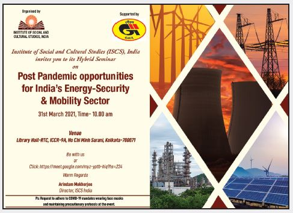

Hybrid Seminar on Impact of COVID-19 on Indo-Bangladesh Trade over West Bengal Date-25th March 2021, Time-11am-1.30pm(IST)
The Institute of Social and Cultural Studies(ISCS),India that as an autonomous organization has been addressing issues pertaining to trade, connectivity, development trends with multi-sectoral audiences over discourses and conferences in collaboration with the ministry, academic institutions and private forums. Following its imperatives The Institute of Social and Cultural Studies(ISCS),India had with support of Indian Oil Corporation Ltd organised a Hybrid Seminar on “Impact of COVID -19 on Indo-Bangladesh Border Trade in West Bengal” the seminar was addressed by the eminent national and International researchers, journalists, legal economists and private organization associates.
Participants of the Hybrid Seminar includes:
• Sri.Arindam Mukherjee- Director, ISCS, India
• Arup Kumar Saha- Head, The Ministry of External
Affairs(MEA), Branch Secretariat office, Kolkata
• Dr.Raja Gopal Dhar Chakrabarti- Prof and HOD
of South and South East Asian Studies, University
of Calcutta
• Soumya Chattopadhyay - Senior ProgramsOfficer,
Indian Resident Mission,Asian Development Bank,
New Delhi, India
• M. S. Siddiqui- Legal Economist, Former Professor
: Daffodil Int'l University, Bangladesh, Senior
Adviser : PrimaDollar Operations Ltd, UK, CEO :
Bangla Chemical
• Dr.Sabyasachi Saha- Associate Professor at the
Research and Information System for Developing
Countries (RIS), New Delhi
• Dr.Nazneen Ahmed- Senior Research Fellow,
Bangladesh Institute of Development Studies
(BIDS),Dhaka
• Sri.Pratim Ranjan Bose- Researcher and Columnist
The Hybrid Seminar was marked with the Inaugural ceremony followed with a welcome address by Sri. Arindam Mukherjee, Director ISCS, India who underlined the fact that impact of COVID-19 on the cargo trade had taken a lot of toll. Thus the hybrid seminar is very time appropriate to actually devise strategies to streamline the trading amongst the two very largest partners of South East Asia. As cross border trading generates employment supporting livelihood of the dwellers around the border areas. The thrash of pandemic has caused migrations, unemployment threatening the survivality of may in the border regions and associated with trade practices in multiple capacities. Cross border trade in not only betterends the economy but also fosters the relations between the adjoining countries. Sri Arup Kumar Saha as part of his deliberation highlighted that the seminar is significant and very timely initiative as the Prime Minister of India Sri. Narendra Modi shall commence his Bangladesh tour laying a hope for more prospective multi-corporational relations between India-Bangladesh in coming timesas government is paying a lot of priorities on Indo- Bangladesh relations as well as cross border trading’s. Sri. Saha depicted how the impact of pandemic has been devastating, rolling out statistics and figures he denoted that the trade graph during April-May-June 2020 has been trepidiating .Although factors like prompt actions, right policy approach and visionary leaderships have been able to mend the trading trends at the petrapole over last few months. Thus in future to make Indo- Bangladesh Trading more beneficial more importance should be given on factors like transport connectivity, BBIN Motor Vehicle agreements, Passenger and cargo protocols, Emphasis should be laid on enhancing connectivity between countries like India-Bangladesh- Nepal and Bhutan, also India-Myanmar-Thailand trilateral connectivity, corridors of engagements among the Bangladesh and North east should be made wide open. Also rail and riverine connectivity should accord importance to substantiate trade and economic upliftments among the neighbourings. The Seminar and its sessions rested its propositions on issues compounding to “COVID-19 its feigning’s on Indo-Bangladesh Border Trade over West Bengal” and “Scooping Policies and Plotting Approaches for New Normal Indo-Bangladesh Border Trade”.
Dr. Raja Gopal Dhar Chakrabarti approached the topic underlyning the importance of the issue in present day – he said that pandemic had a harmful impact on development and trade economics but at the same time has unfurled new approaches, diverse corridors of engagements and opportunities. He added that with time as the things are ushering back to normalcy- right

policies are to be adopted to ensure ascending growth and developments in trade and commerce between India- Bangladesh trade. Sri Soumya Chattopadhyay added as that this event is extremely relevant just before the PM’s visit to Bangladesh. India exports around 8.2 percent million goods to Bangladesh while Bangladesh exports roughly around 1.2 million altogether.70 % of goods that are exported from Bangladesh to India are either by roads or rails, while India uses coastal shipping to transport their goods to Bangladesh. Therefore firstly it is important to map the routes passing through West Bengal, to enhance trade facility among both the countries. Secondly subsequent importance should be given to North Bengal Transit Trade routes especially to foster economic relations, socio-economic upliftments
and political harmony among Nepal, Bhutan and Bangladesh more pronouncedly. Integrated Check posts of North Bengal should be improved, Infrastructural policy over Act East should be made better. Along with constant studies and improvement based policy approach a lot of importance should be extended on logistical and administrative issues.
A veteran and experience legal economists M. S. Siddiqui depicted that certain martinet legal restrictions, Indian Export regulatory trends, custom rules many a times clogs the smooth trading practices amongst the neighbourings. Thus it’s important to discuss and redefine policies and clauses of Bi-Lateral trade agreements. In times like pandemic or emergencies restrictions and custom regulatory practices should be eased out. During summit and meets countries should set rules to be adopted in exceptional and unprecedented situations to reduce sufferings of people associated and dependent on trade, also ensure expedite mechanisms towards export and import of essentials like medicines without much regulatory and legal barriers. Dr. Sabyasachi
Shaha acknowledging the views and perspectives of other speakers elucidated that trade policies should be given a lot of importance to liberalize and modernize economy and opening scopes for convergence and connectivity. According to Dr.Saha initiatives like Atma Nirbhar Bharat in itself is a model for trade optimism – as it renders a huge scope for export and reach of indigenous products in the global market. In order to optimize trade as per Dr.Saha factors like improving transport services, enhancing role of technologies, developing convergence between regional and local institutions ,land enrooting’s should be given utmost priority.
Dr.Nazneen Ahmed who accepted the trade cooperation approaches defined and suggested by others – but stressed a lot of importance of women empowerment and entrepreneurship programmes, As Dr. Ahmed has conducted studies to secure ideas that a lot of women often pays visit to India for procuring goods or even selling products of their nations. According to Dr. Ahmed Pandemic had shackled the travel and movement of many entrepreneurs and traders thus technological development, improved E-commerce should be prioritize in future also a comprehensive template should be adopted by countries to ensure high percentage of

beneficiary’s over CEPA for both the countries. Sri Pratim Ranjan Bose featured the refurbishments of domestic rules, infrastructural developments, enhanced connectivity facilities and far more logical set of rules pertaining to work permit, as trade initiates migration, settlement and employment opportunities. Thus asccording to him along with rail, road enroutings, and maintenance of Check Posts a vital importance should be agog to its trade associated factors. The hybrid seminar brought up certain very interesting issues and factors discussed as a part of presentations also later over lively discussions by enthusiastic and wide audience who were present to witness the interesting seminar in person also vitually.
